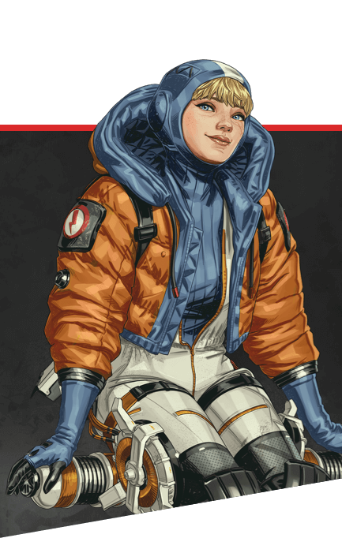
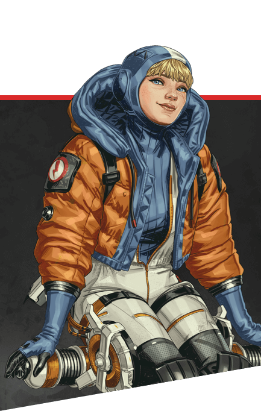
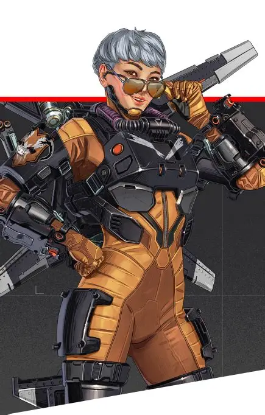
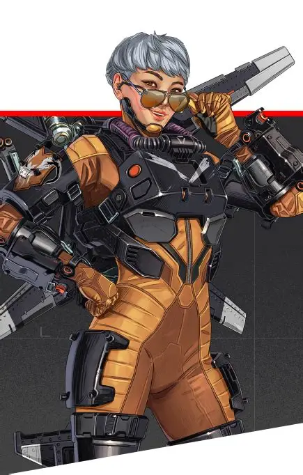

Defensores
As lendas focam em proteger áreas e controlar o campo com escudos e armadilhas. São ideais para segurar posições e garantir vantagem tática para a equipe durante as lutas.
 

Reconhecimento
As lendas coletam informações e revelam posições inimigas no mapa. São essenciais para antecipar combates e guiar a equipe com vantagem estratégica.